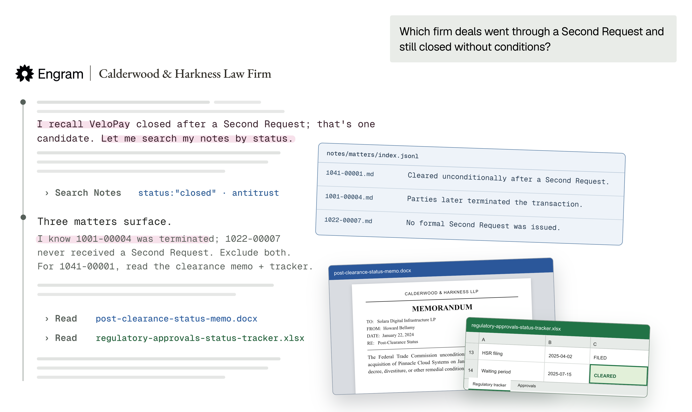

未来的agent会用多种方式熟悉自己的工作：把知识和技能学进权重、给自己写笔记、用工具高效探索世界。Engram与Harvey合作，首次展示了这套系统在真实法律工作上的效果。
核心思路是把参数化知识、文本笔记和搜索当作一个端到端系统的三部分。模型被问到时能直接从权重回忆信息，但更重要的是在循环中结合搜索使用知识：不只写笔记，还学会如何有效使用它们。
结果：为合成律所Calderwood & Harkness（C&H）构建的agent，通过「学习」律所积累的知识，用比前沿模型低一个数量级的成本解决问题：$0.13 / 30% 全过，对比Opus 4.8的 $1.32 / 25%。
真实法律工作中，律师长期在同一环境里工作。C&H用持久环境模拟这一点：agent在同一个律所文件系统里执行许多任务，覆盖邮件、备忘录、法律文件、电子表格等。这与大多数基准不同：后者每例给独立上下文（比如独立仓库里的独立软件工程问题）。C&H更贴近真实工作：每个任务随时间复用同一上下文。

哈利波特系列约150万token。最大的律所可以高几个数量级：有些律所每年新开2万个matter！C&H的任务包含需要理解律所工作历史的搜索与推理查询。例如：「我在为新SPA起草营运资本调整机制，想从最近一笔交易开始而不是从头构建公式。我们有哪笔最近的M&A交易带营运资本调整？」
要回答这类问题，今天的agent需要读几百份文件理解每个案件实质，成本高得离谱。C&H合成律所有100M tokens、250+ 客户matter。对Opus 4.8（高推理档），C&H平均每次查询成本 $1.32，长轨迹耗尽上下文窗口，平均成功率仅25%。在同一个文件系统上跨许多任务执行时，成本爆炸：agent每次会话都反复重读相同文件。
律师不需要读完律所全部文件历史来回忆去年结构相似的合同案件：他们的知识在工作中自然积累。我们训练agent也这样做：先学习工作区内容。文本记忆和参数化记忆都可以看作对数据某些视图的缓存，让查询时更容易访问：现代版数据库的「物化视图」。
整个训练过程里，agent通过数千次rollout探索工作区，沿途创建文本笔记组织知识，并自生成训练数据把工作区内化。我们用组合损失训练轻量知识模块，包括对模型输出的蒸馏，以及基于模型生成问题的强化学习。
用笔记记忆。 文本记忆可解释、易编辑。但纯文本记忆会「千刀万剐而死」：要记住的细节有长尾。当模型笔记缺少回答查询的细节时，笔记无用甚至误导；反过来让agent记录每个可能的开放式特征，记忆会增长到失去压缩收益：在大工作区不可扩展。
把工作区内化进参数。 参数化记忆捕捉关于文档的弥散关联和开放式特征。法律任务中，查询常问难以在笔记里穷尽或无损写下的抽象概念，比如多边合同的具体结构。参数化记忆还能把知识更灵活地织进agent行为：影响它如何解读查询、搜索证据、评估结果。模型自生成合成数据和任务来教自己在权重里内化数据的不同方面。
我们在开源基础模型上用参数高效微调训练（LoRA）。对C&H，agent把100M tokens原始内容压缩成1M tokens笔记。训练时agent识别跨文档共享的全局特征，整合进简单schema，编排子agent跨matter提取对应数据。
我们在一个harness里端到端训练agent，让它能用工具操作笔记和原始文档。这使它学会联合使用所有记忆。比如agent的笔记可能变得很大，训练让模型知道「该搜什么」。定性地，训练过程中模型学会更直接地查询笔记，并有效结合搜索结果和参数回忆（比如用一个补充另一个的发现）。
用记忆，我们用一个非常小的稠密模型Qwen3.8-27B实现了比最强前沿模型更高的intelligence-per-token。因为模型已经学习过律所工作区，能避免泛泛搜索和穷举阅读，大幅降低成本。
成本之外，记忆还提升质量：模型能在相同上下文窗口里靠已知内容取得更多进展，而过去查询要么耗尽上下文、要么在达到正确答案前停下。按intelligence-per-token（每10万token的平均标准通过率）比较模型时优势明显。有些模型靠穷举读工作区文档能提升mean-criteria分数，但极其昂贵。用我们的配方，我们把成本与质量的Pareto前沿往前推了。
Studying把计算从推理时间挪到训练时间。对同一工作区反复做大量查询的大工作区，更激进地摊销理解工作区的重复成本是合理的。增加study compute能把cost-per-query进一步压低。这是计算扩展的初步迹象（希望质量也能随计算扩展提升）。
训练后的agent展现出与今天模型定性不同的行为：后者默认通用（但低效）的探索策略。我们测量训练模型轨迹相对基础模型的几个属性。
首轮就定向。 训练模型99% 的轨迹以定向搜索开始，25% 的情况下首轮思考轨迹就已提到至少一个正确matter。基础模型几乎总是先打开系统提示提到的笔记入口。
搜索更聚焦。 训练模型的搜索更定向（平均返回5.6个唯一matters vs基础模型12.1个），且更常包含问题或工作区未提到的新过滤词（每rollout平均9.2次工具调用vs 2.4）。训练模型也更快到达gold set里的第一个matter（3.7轮vs 5.9轮）。
定性的例子：记忆能补上搜索漏掉的matter：模型从早前工作记住两个反垄断matter（一个已终止1001-00004、一个在HSR Second Request后清关1003-00003），据此正确给出符合条件的结果。
为了解模型对C&H知道什么，我们用闭卷知识评估测试：把每个评估问题分解成单跳和多跳前置条件。例如回答「拉出所有我们发出HSR Second Request的反垄断matter」（答案是A、B、C）需要知道「matter A是反垄断吗？」「matter A发出HSR Second Request了吗？」等。这种分解不完美，但给有用的知识获取代理。
让模型「纯凭记忆回答、不用任何工具」，跟踪它随训练（增加study compute）的表现。模型随学习越来越了解底层工作区，最高study compute下72% 的问题答对。
我们还用开放式问题探测，发现模型对C&H及工作区知道得相当多：有时惊人。例如我们从不在工具调用输出上直接训练，但模型有时能完美预测对其笔记复杂查询的结果：给它一段jq命令，它直接给出查询输出。闭卷知识与端到端表现之间的差距说明，还有很大空间去激发模型知识、提升解决下游任务的能力。
结果展示了把所有记忆整合进一个系统的收益：十分之一成本、更准的结果，但还有很多工作要做。现实里工作区不是静态的：文档不断创建和编辑，用户问题随时间变化。记忆系统需要和它们所在环境一样动态。
查询分布变化时可以调整study方案、按用户定制；知识固化时可以把笔记转移到权重、更快回答。这些持续学习问题是根本性的研究问题，也是Engram的重点。
让这个基准难的特点并非C&H或法律领域独有。几乎所有真实工作的共同主题是贯穿每天、让知识和经验在数周数月里复合的持久上下文。通过study，agent构建丰富、互补的记忆系统来理解工作区，越来越熟悉自己做的工作：这是这个新方向最激动人心的地方。
参考：https://engram.com/blog/legal-agents-with-memory